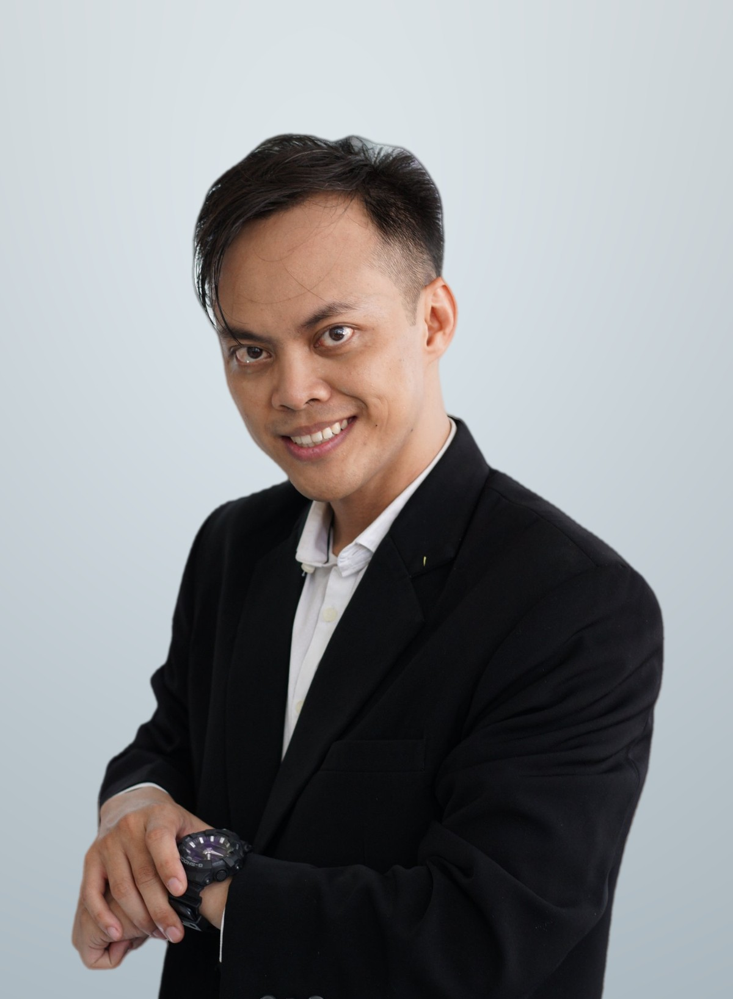

Deiky Catur Hadi
Mengelola fungsi Human Resource, General Affair, dan Information Technology di PT Persada Medika Utama. Saya membangun sistem internal yang membuat proses kerja lebih tertib, efisien, dan terukur.

People. Process. Technology.
Mengintegrasikan manusia, proses, dan teknologi untuk membangun sistem yang efektif, menciptakan solusi strategis, dan memberikan nilai tambah bagi perusahaan.
Saat ini saya mengelola fungsi Human Resource, General Affair, dan Information Technology di PT Persada Medika Utama, perusahaan laboratorium medis dan klinik, sekaligus mendampingi pimpinan sebagai Sekretaris Perusahaan. Sejak 2021, saya meniti karier dari supervisor hingga manajer.
Saya menguasai Microsoft Office dan Google Workspace, serta memaksimalkan teknologi AI untuk mengotomatisasi proses kerja yang ditujukan untuk efisiensi waktu.
Pola implementasi strategi sebelum merancang program kerja dan sistem internal.
Manager HRGA & IT dan Sekretaris Perusahaan
PT Persada Medika Utama
Mengelola operasional dan anggaran Human Resource, General Affair, dan Information Technology, termasuk perizinan dan kepatuhan terhadap regulasi, serta mendukung kegiatan pimpinan.
Manager HRGA & IT
PT Persada Medika Utama
Merencanakan strategi dan operasional HRGA dan IT, mengawasi perizinan perusahaan, serta mengembangkan kebijakan.
HRGA & IT Supervisor
PT Persada Medika Utama
Mengawasi administrasi kepegawaian, fasilitas, aset, dan pemeliharaan sistem IT.
Admin Laboratorium
PT Tritunggal Sentra Utama
Mengelola administrasi, pencatatan hasil pemeriksaan, dan pengarsipan dokumen laboratorium.
Call Center AirAsia
PT Infomedia Solusi Humanika
Memberikan layanan informasi dan menangani keluhan pelanggan.
15 aplikasi internal.
Program Kebijakan HR
- Perancangan Peraturan Perusahaan
- Suksesi Jabatan
- KPI
- Greeting & Grooming
- Ikatan Dinas Diklat
- Employee of the Month
- Struktur Golongan Jabatan & Upah
- Penerimaan Magang
Pengembangan Internal IT
- Pengembangan internal: pembuatan sistem aplikasi dan otomatisasi proses.
Program Kebijakan GA
- Pemantauan rutin inventaris bergerak dan tidak bergerak.
Keahlian yang saya terapkan.
Sertifikasi dan pelatihan.
- Certified Human Capital Manager (CHCM)Wahana Insan Prima (Kemenaker RI) · Juni 2025
- Pemahaman ISO 15189:2022BSN · Oktober 2025
- Auditor Internal ISO 15189:2022BSN · November 2025
- Ahli K3 UmumGSI Selamat Indonesia (Kemenaker RI) · Februari – Maret 2026
KPI · Struktur dan Skala Upah · Perlindungan Tenaga Kerja (Kemenaker) · Balanced Scorecard (BSC) · Objectives and Key Results (OKR)
Manajemen dan Fasilitas Kesehatan · POPAL · Pendidikan K3 Dasar
Pendidikan Bahasa Inggris, Universitas PGRI Adi Buana Surabaya · 2013 – 2017
Mari berdiskusi.
Saya terbuka untuk diskusi seputar HRGA, administrasi perusahaan, dan pengembangan sistem internal.